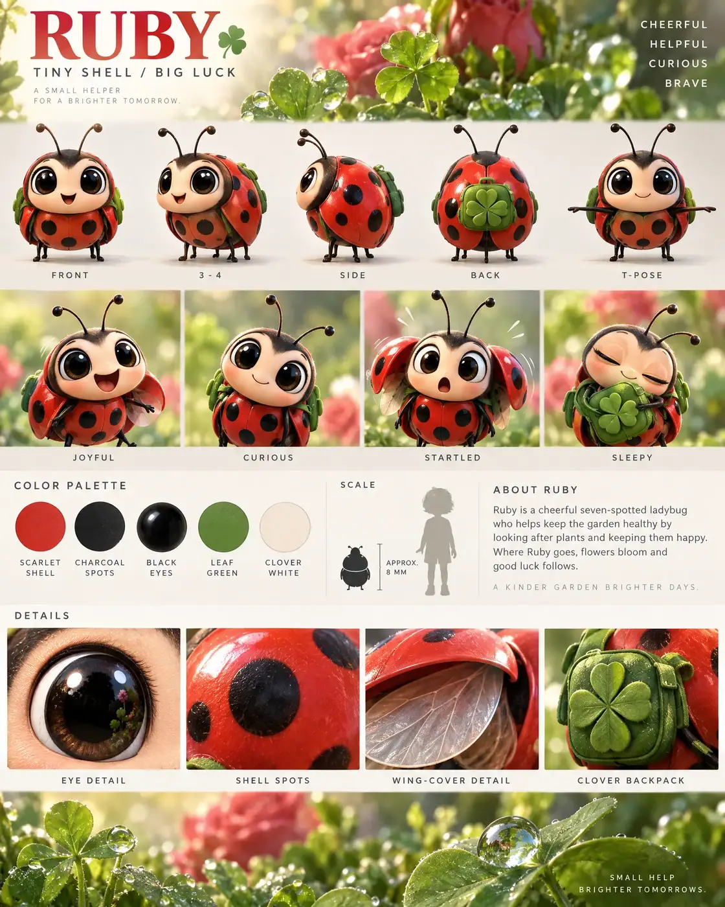

#90 of 100
Ruby
Seven-spotted ladybug
Tiny CrittersTINY SHELLBIG LUCK
- Species
- Seven-spotted ladybug
- Collection
- Tiny Critters
- Height
- 8 MM
- Personality
- CHEERFULHELPFULCURIOUSBRAVE
- Colour palette
- SCARLET SHELLCHARCOAL SPOTSBLACK EYESLEAF GREENCLOVER WHITE
- Expressions
- joyful shell-open smile
- curious antenna tilt
- startled wing-cover flutter
- sleepy clover-nuzzling expression
- Detail panels
- EYE DETAIL
- SHELL SPOTS
- WING-COVER DETAIL
- CLOVER BACKPACK
- Character note
- Ruby helping the garden bloom while spreading good luck
Reference sheet prompt
Cute seven-spotted ladybug named RUBY, with oversized glossy black eyes, a rounded scarlet shell, seven bold black spots, tiny black legs, delicate antennae, and a small green clover backpack. A lucky garden helper high-end 3D animated feature reference sheet, portrait 4:5 presentation board, original character design, polished family-animation aesthetic, top-left header reading “RUBY” with the tagline “TINY SHELL / BIG LUCK,” top-right traits reading “CHEERFUL / HELPFUL / CURIOUS / BRAVE” full-body turnaround — exactly five evenly spaced views: front / 3-4 / side / back / T-pose, identical seven-spot arrangement, shell shape, antennae, legs, backpack, and proportions in every view, clean labels beneath each pose row of 4 bust-length facial expressions: joyful shell-open smile, curious antenna tilt, startled wing-cover flutter, sleepy clover-nuzzling expression color palette swatches labeled SCARLET SHELL, CHARCOAL SPOTS, BLACK EYES, LEAF GREEN, CLOVER WHITE lush garden habitat accents with clover leaves, aphid-free roses, dewdrops, stems, and soft morning light restricted to the information band and bottom detail strip, middle band with palette, ladybug silhouette beside a human scale silhouette, approximate length “APPROX. 8 MM,” and a short bio about Ruby helping the garden bloom while spreading good luck bottom macro panels labeled EYE DETAIL, SHELL SPOTS, WING-COVER DETAIL, CLOVER BACKPACK 8k render, glossy rounded shell, delicate legs and antennae, consistent model-sheet proportions, clean editorial typography, no extra insects, no duplicate limbs, no logos, no random text